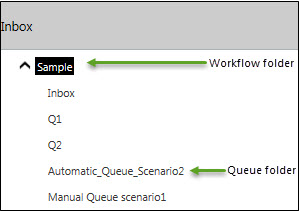

No
The worklist folders list all folders that contain work items. The Work items list folder is the top-level folder. In the default view, the Work items list folder contains sub-folders for each workflow from which tasks have been assigned.
The workflow folder has an Inbox folder and a folder for each queue in the workflow that the actor is a participant of.
The default layout of items in the Inbox can be customized and saved as a personalized folder. All items in the Inbox will also be available in the personalized folder with the specified layout. See Customizing Inbox View for more information.
